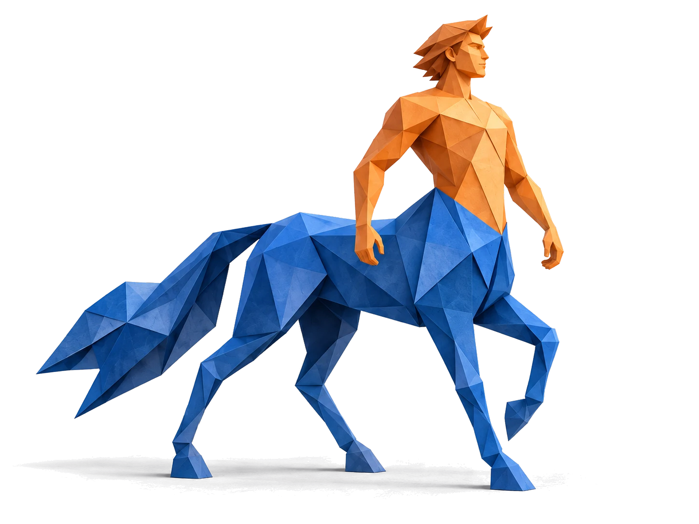
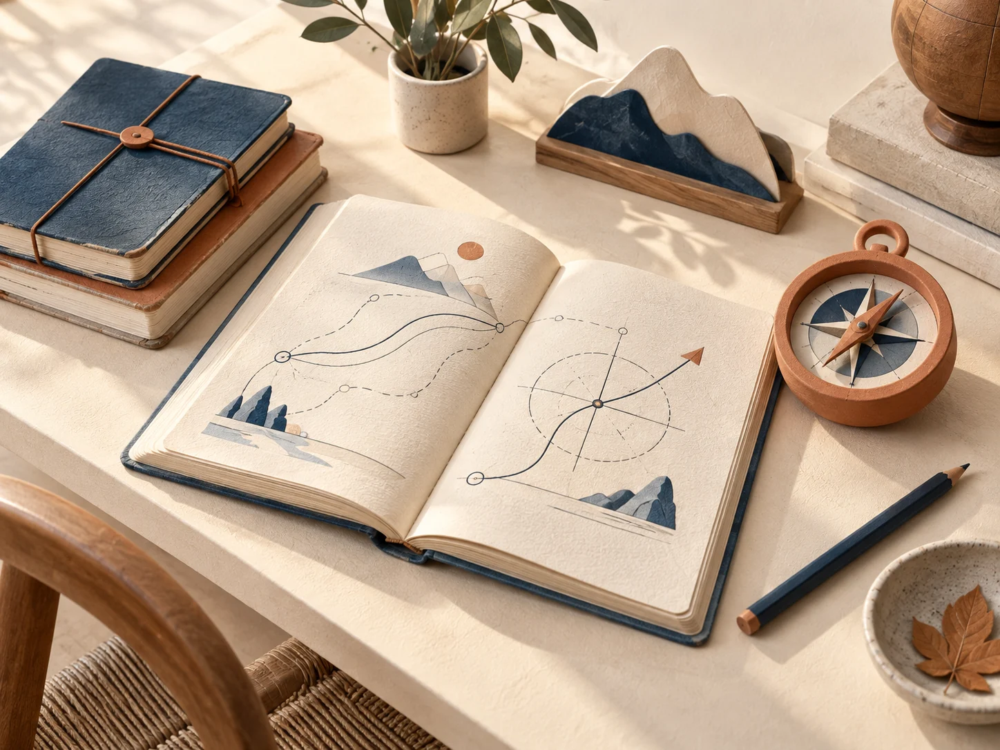
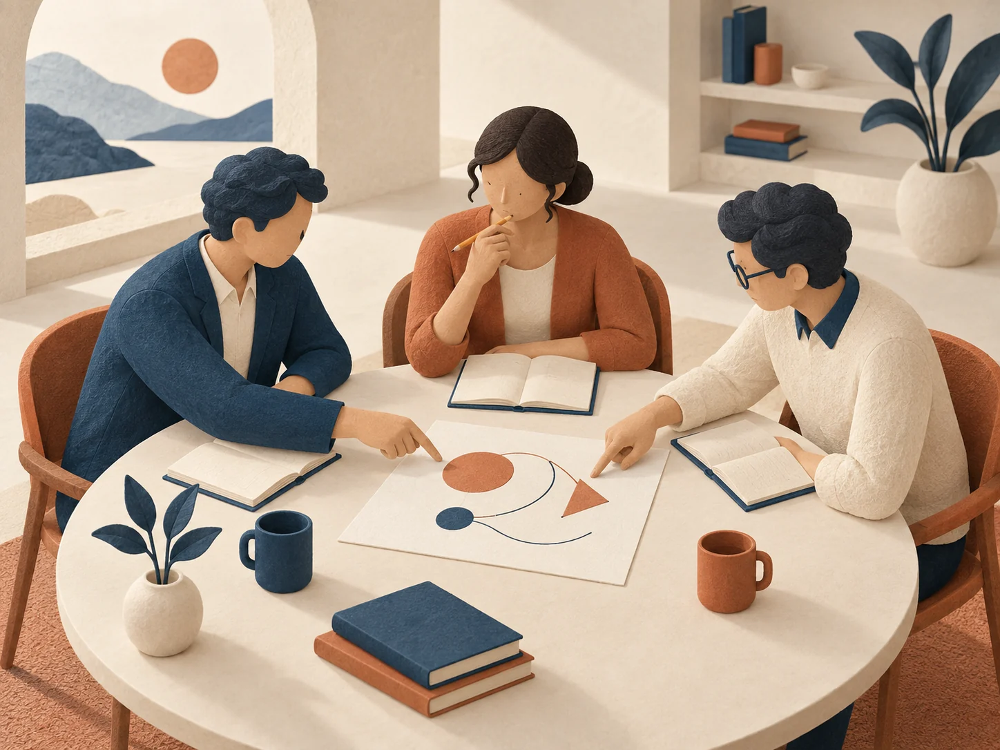
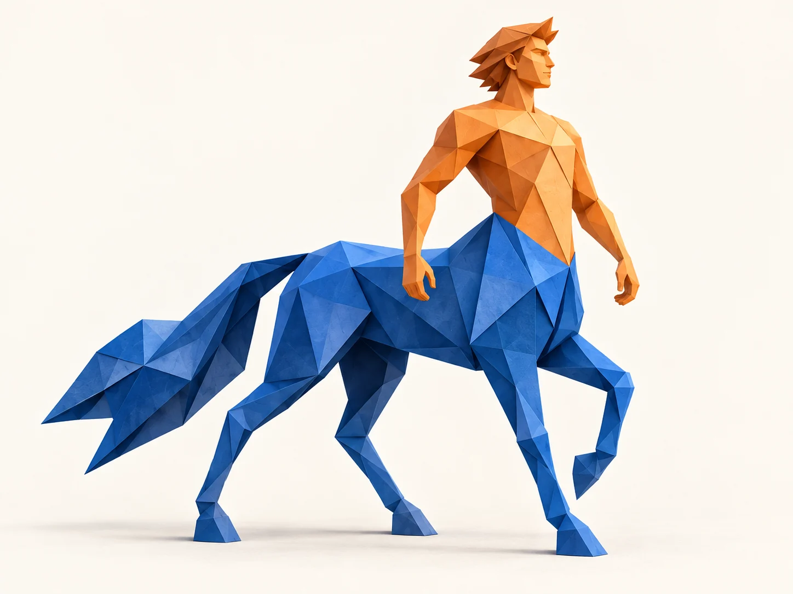

色板COLORS
- 象牙画布
#f5f2eabackground · 正文区底 - 衬纸
#fbf9f4card · 画框衬纸、输入框 - 深象牙
#ebe6d9secondary · 次级色带、hover - 栏线
#d9d3c3border · 行间细线 - 石板灰
#4f5b6emuted-foreground · 6.15:1 - 墨蓝
#111c2eforeground · 正文与重线 - 董事会深蓝
#0b1f3aprimary · hero 与色带、主按钮 - 午夜蓝
#07162bprimary-deep · 页脚、按压态 - 抬升蓝
#15305aprimary-raised · 深蓝上 hover - 深蓝栏线
#2a4166primary-border · 深蓝上的细线 - 雾蓝
#a9b4c6深蓝上次要文 · 7.89:1 - 黄铜
#b08d4cbrass · 只做线与签，≤3% - 旧金
#765a1fbrass-deep · 象牙上的小标 5.77:1 - 浅铜
#d4b97cbrass-light · 深蓝上的小标 8.68:1 - 砖红
#80241edestructive · 错误提示 - 松绿
#2f5d46success · 成功状态 - 输入框线
#8d8673input · 3.24:1
面积配比：象牙 56 · 深象牙 8 · 深蓝 33 · 黄铜 3
字体与字号阶梯TYPOGRAPHY
--font-display / --font-serif · Frank Ruhl Libre + Noto Serif SC → Songti SC
人决定方向 AI 拓展能力
--font-sans · Libre Franklin + Noto Sans SC → PingFang SC
聊聊你正在做的事，和你希望 AI 帮你做成的事。Academy
--font-mono · IBM Plex Mono → ui-monospace, Menlo
2026.09.15 · 01 02 03 04 05 · HUMAN × AI
强调词：900 字重 + 2px 黄铜底线，不换色
都是起点。
display
52–116 / 1.12让 AI 成为
heading-xl
36–68 / 1.22你走过的路
heading-lg
30–44 / 1.22保持好奇，继续对话
heading 28来自嘉木的一封信
subheading 22面向经营者与管理者的长期共学
body-lg 18 / 1.8聊聊你正在做的事。
body 16 / 1.8把你的经验、判断和真实问题，与 AI 的能力连接起来。
body-sm 14由半人马人工智能发起
caption 12 · labelFROM THE FOUNDER
按钮全状态BUTTONS
签名：书眉线 · 空心章节数字 · 罗盘经纬SIGNATURE
.rule — 通栏 1px 墨蓝线 + 左端 56×3 黄铜签；每个区块都从它开始
01/从你的积累出发
章节数字：Frank Ruhl Libre 400，1px 旧金描边、不填色。只用于三章节这一真实顺序。

图片框处理PLATES



期刊目录行 · 徽标JOURNAL ROW / BADGE
流程步骤STEPS
- 01
带来问题
从正在做的事出发。
- 02
一起梳理
讲清背景，找到目标。
- 03
动手尝试
做出可以试用的初版。
- 04
交流结果
体验彼此的成果。
- 05
持续改进
带着反馈，再走一步。
输入框 · 引文INPUT / QUOTE
default
focus：2px 深蓝环
error：请填写完整的手机号或微信号
“我希望学院能聚起一群认同人机共生、愿意共同成长的人。”
引文块：1px 黄铜竖线 + 衬线 500；引号悬挂半字。署名线同为黄铜 1px。
联系横幅CONTACT BANNER
圆角 2px · 阴影只给画框 · 黄铜只做线。半人马AI学院 / 04-boardroom